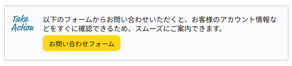
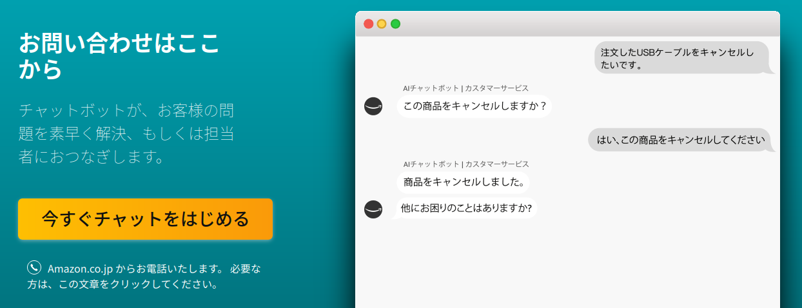

Kindle Paperwhite を交換してもらった話

昨年末に Kindle Paperwhite を新調したのだが，知らん間に再起動途中の状態で逝ってた。
電源ボタンの40秒長押し（！）の強制再起動もダメで orz な状態。
しょうがないので Amazon に連絡して交換か返品しようと連絡先をググってたら以下の記事を見つけた。
この記事を参考に Amazon の「カスタマーサービスに連絡」を開くと

とあったので「お問い合わせフォーム」のページに移動すると

おおっ。チャットかい！
「今すぐチャットをはじめる」でチャットウィンドウを開くと AI チャットボットが質問してくるので答えていく。 今回は Kinddle デバイスが対象ということで過去の注文履歴から該当の商品を探してくれた。 賢い賢い。
ここからは人間が相手するらしい。 チャットを継続するか電話に切り替えるか選択できるが，今回はチャット継続で。
最初に症状と40秒長押しでもダメだった旨を報告する。 したら「パソコンに繋いで反応があるか見てもらえますか？」と言われて「は？」となる。 5秒くらい考えて「あぁ USB でパソコンと繋げと言ってるのか」と気がついた。 我ながら焦ってるのか歳のせいで頭が固くなっているのか…
Kindle 端末とパソコンを USB で繋いだが双方とも反応なし。 これで Kindle 端末が完全に逝ってることが確定した（ちなみにスマホをパソコンに繋いだらちゃんと反応したのでパソコン側の不備はない）。 いやぁ Kindle Paperwhite って USB でパソコンに繋いだら中身が見れるんだね。 言われてみれば当たり前だが（笑）
一連のやり取りの結果「交換しましょう」という話になり，その場でサクサク手続きしてもらった。 これが 2022-02-08 朝の話。
チャットでは 2022-02-10 に到着と言っていたが，実際には1日前倒しで9日に到着した。 そこから慌ただしい。 だって「11日までに返品してください」とか言ってくさるんだもん。 11日までに発送なら余裕だが11日着は無理（笑）
とにかく Amazon からのメール案内に従ってバーコード付き送り状を印刷して1（プリンタを持ってないので PDF 化してネットプリントで出力した） JP に集荷依頼を（Web で）出して，実際に発送したのが10日午前中。 JP から配送完了のメールが来たのが12日で今日14日にようやく Amazon から受領の連絡が（メールで）来た。 やきもきさせるよ，全く。
ちなみに交換してもらった端末はすこぶる快調っス。 人によるのだろうが，私のような人見知りにはチャットから入るほうが敷居が低い。 お世話になりました。

- 【NEWモデル】Kindle Paperwhite シグニチャー エディション (32GB) 6.8インチディスプレイ ワイヤレス充電対応 明るさ自動調節機能つき 広告なし
- Amazon (Release 2021-11-10)
- エレクトロニクス
- B08N2ZL7PS (ASIN), 0840080586151 (EAN), 840080586151 (UPC)
- 評価
前の端末のバッテリがヘタれたので新しいのを買った。安定のもっさり感（笑）
-
プリンタを持ってない人のための返品手続きも明記されているので，ご安心を。 ↩︎